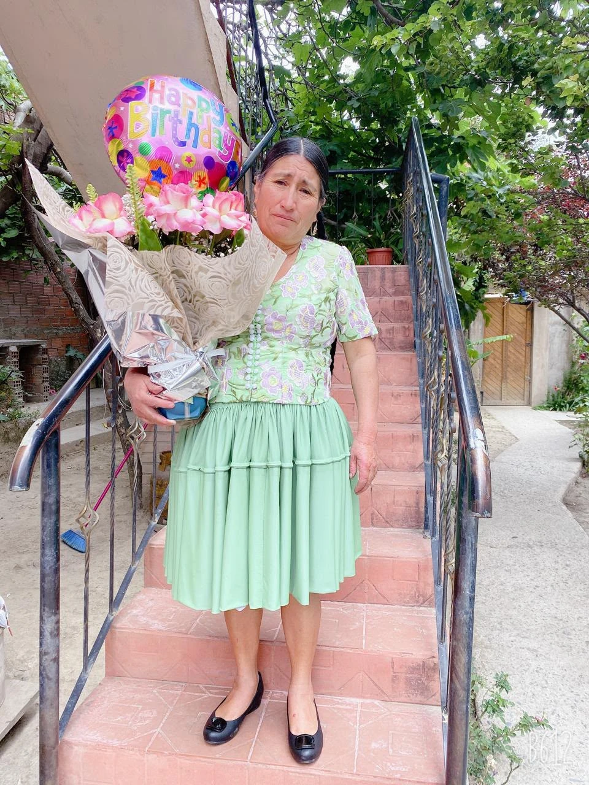

SESENTA AÑOS DE HISTORIAS Y ABRAZOS
Irene JesúsSánchez Escobar

60AÑOSCON EL CORAZÓN AGRADECIDO
Sesenta años,
mil motivos para celebrar
La vida me ha regalado momentos que guardo con cariño, personas que iluminan mis días y sueños que todavía quiero cumplir.
En mis 60 años, quiero reunir a quienes hacen más bonito mi camino. Me hará muy feliz celebrar contigo este nuevo capítulo.
No cuento los años.
Cuento las sonrisas, los abrazos
y el amor que me acompaña.
RECUERDOS QUE FLORECEN
El álbum de mi vida
Cada fotografía guarda un pedacito de mi corazón.
Recuerdo 1 de 10
TOCA LAS FLECHAS PARA PASAR LAS FOTOS
RESERVA ESTE DÍA PARA COMPARTIR CONMIGO
Octubre
2026
Sábado 17 de octubre
15:00
Guardar la fechaFalta poquito para abrazarnos
Un día especial, con mis personas especiales.
EL LUGAR DE NUESTRO ENCUENTRO
Donde nace la alegría
El lugar más bonito es aquel
donde estamos juntos.
TÚ TAMBIÉN ERES PARTE DE MI HISTORIA
¿Me acompañas?
Quiero celebrar la vida, compartir sonrisas y crear nuevos recuerdos contigo. Confirma tu asistencia para preparar este día con mucho cariño.
Confirmar asistencia ♡Dudas y consultas ↗Tu presencia será una de las flores
más bonitas de mi celebración.